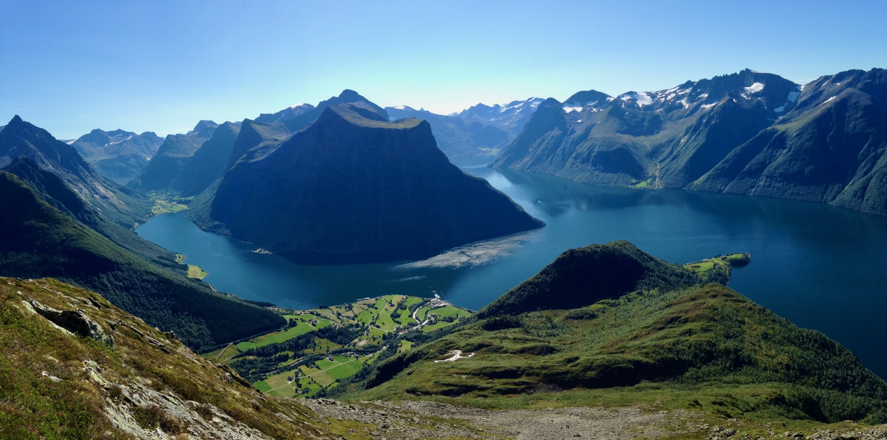
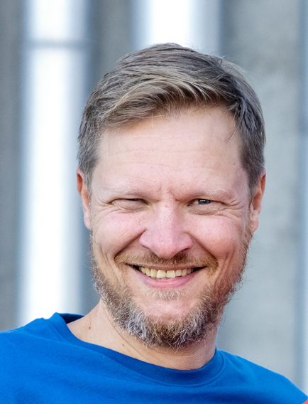
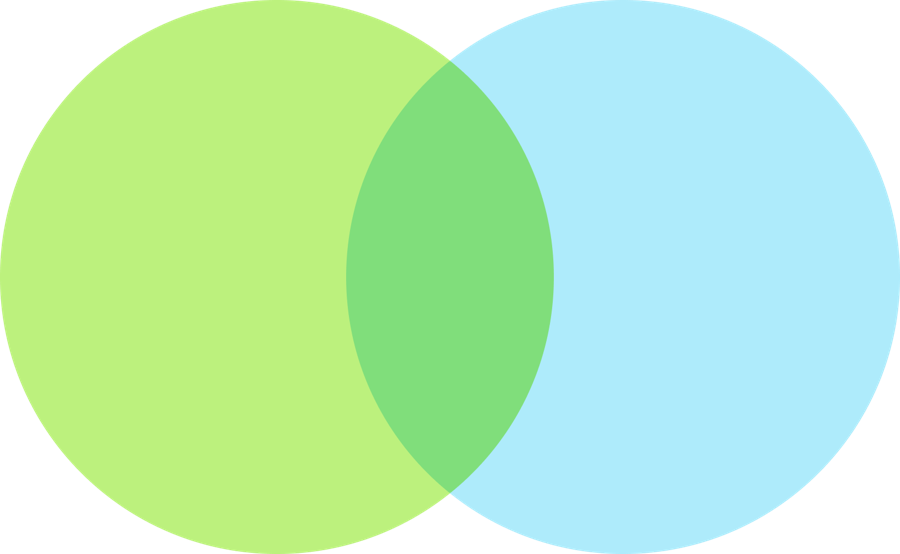
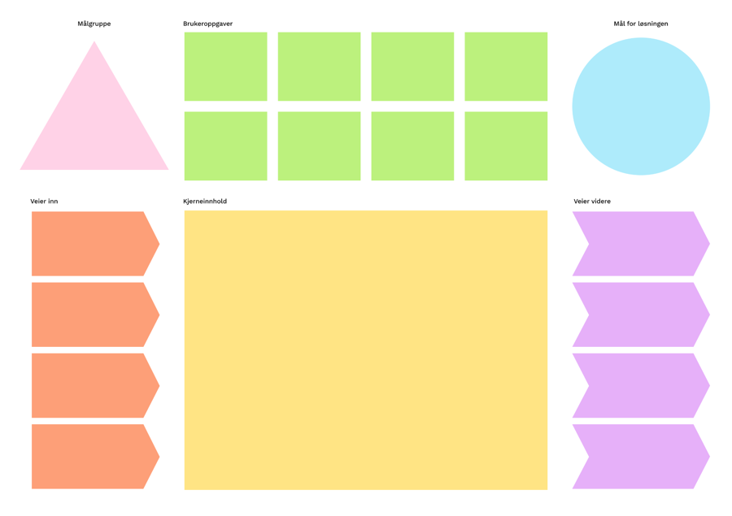
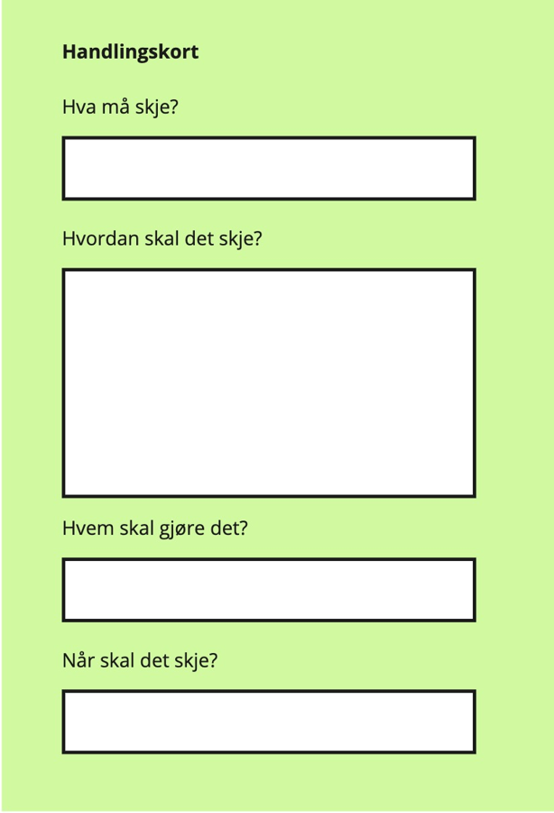

Har de lese rapporten? Umiddelbare tankar?

Kunde, 26. oktober 2026

Har de lese rapporten? Umiddelbare tankar?
«Det er ikke akkurat intuitivt. Du må liksom vite hva du er ute etter.»
HMS-leiaren
Kunnskapen blir brukt, men vegen dit er vanskeleg å finne

Avsendarorientert ressursside
Tekstvegg og «glansa bilder»
Kunnskapen er organisert for avsendaren, ikkje for dei som skal bruke han
«Når det er null treff, så ville jeg bare tenkt: Ok, da har de det ikke.»
Ein testdeltakar
#1
Prioriterte temasider
Prioritere

BrukerbehovStrategiKartlegge brukarbehov og strategi. Prioritere brukaroppgåver, mål og kjerner.
Samarbeide

Jobbe saman på tvers av siloar, nivå og fag for å lage det beste svaret på brukaroppgåver og mål.
Fikse

Prioritere tiltak, fordele ansvar og fikse problema på enklast mogleg måte. Følgje opp toppoppgåvene.
Takk for i dag,
vi snakkast!